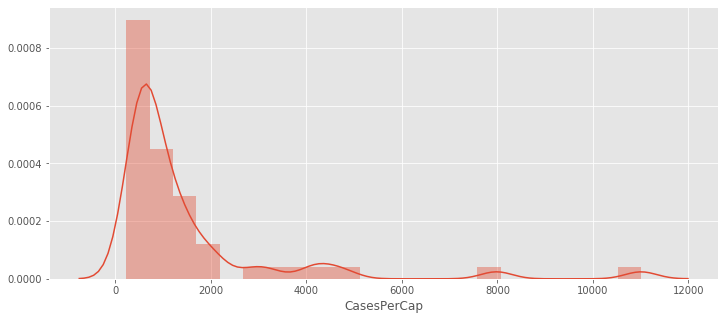
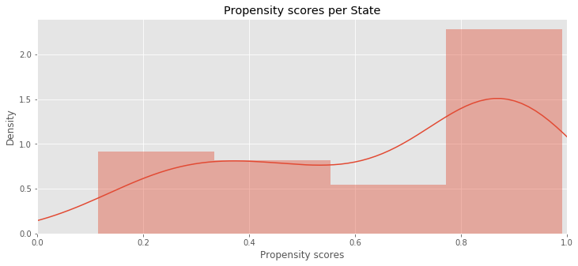

Causal Regression Primer
import numpy as np
import pandas as pd
from pathlib import Path
import statsmodels.api as sm
import statsmodels.formula.api as smf
from sklearn.linear_model import LogisticRegression
from sklearn.calibration import CalibratedClassifierCV
from sklearn.preprocessing import StandardScaler
from imblearn.over_sampling import SMOTE
from imblearn.pipeline import Pipeline
import matplotlib.pyplot as plt
import seaborn as sns
%matplotlib inline
plt.style.use('ggplot')
np.random.RandomState(42)RandomState(MT19937) at 0x1A45597360data = pd.read_stata('COVID.dta')data.set_index('StateName', inplace=True)data['Lockdown'] = 1 - data['Strategy']
data['CasesPerCap'] = data['Cases']/(data['Population'])
data['Intercept'] = 1data.head()| Population | Density | Age | Income | POC | Strategy | Cases | Deaths | Governor | Lockdown | CasesPerCap | Intercept | |
|---|---|---|---|---|---|---|---|---|---|---|---|---|
| StateName | ||||||||||||
| Alabama | 4.9 | 93.500000 | 39.900002 | 48.099998 | 31.500000 | 0.0 | 4241.0 | 123.0 | 0.0 | 1.0 | 865.510193 | 1 |
| Alaska | 1.3 | 1.300000 | 34.000000 | 73.000000 | 33.299999 | 0.0 | 293.0 | 9.0 | 0.0 | 1.0 | 225.384628 | 1 |
| Arizona | 7.3 | 57.000000 | 37.400002 | 56.599998 | 27.000000 | 0.0 | 3692.0 | 142.0 | 0.0 | 1.0 | 505.753418 | 1 |
| Arkansas | 3.0 | 56.400002 | 37.900002 | 45.900002 | 23.000000 | 1.0 | 1599.0 | 34.0 | 0.0 | 0.0 | 533.000000 | 1 |
| California | 39.5 | 253.600006 | 36.299999 | 71.199997 | 27.900000 | 0.0 | 26838.0 | 864.0 | 1.0 | 1.0 | 679.443054 | 1 |
f, ax1 = plt.subplots(1, 1,
figsize=(12, 5),
)
sns.distplot(data['CasesPerCap'], ax=ax1)<matplotlib.axes._subplots.AxesSubplot at 0x1a4dd8c048>
Model 1: Predict the Strategy
X = data[['Population', 'Density', 'Age', 'Income', 'POC', 'Governor']].copy()
y = data['Lockdown']
lr = Pipeline(
steps = [('scale', StandardScaler()),
('smote', SMOTE()),
('clf', CalibratedClassifierCV(LogisticRegression()))
]
)
lr.fit(X, y)Pipeline(memory=None,
steps=[('scale',
StandardScaler(copy=True, with_mean=True, with_std=True)),
('smote',
SMOTE(k_neighbors=5, n_jobs=None, random_state=None,
sampling_strategy='auto')),
('clf',
CalibratedClassifierCV(base_estimator=LogisticRegression(C=1.0,
class_weight=None,
dual=False,
fit_intercept=True,
intercept_scaling=1,
l1_ratio=None,
max_iter=100,
multi_class='auto',
n_jobs=None,
penalty='l2',
random_state=None,
solver='lbfgs',
tol=0.0001,
verbose=0,
warm_start=False),
cv=None, method='sigmoid'))],
verbose=False)propensity = pd.DataFrame(lr.predict_proba(X), index=data.index)
propensity.sort_values(by=1)| 0 | 1 | |
|---|---|---|
| StateName | ||
| Utah | 0.885211 | 0.114789 |
| Idaho | 0.829723 | 0.170277 |
| Wyoming | 0.787564 | 0.212436 |
| Nebraska | 0.780540 | 0.219460 |
| North Dakota | 0.777525 | 0.222475 |
| Alaska | 0.731256 | 0.268744 |
| South Dakota | 0.713944 | 0.286056 |
| Iowa | 0.694327 | 0.305673 |
| Arkansas | 0.691609 | 0.308391 |
| Oklahoma | 0.689812 | 0.310188 |
| Miss. | 0.628254 | 0.371746 |
| westVa | 0.599544 | 0.400456 |
| Indiana | 0.587710 | 0.412290 |
| Missouri | 0.572347 | 0.427653 |
| Arizona | 0.521740 | 0.478260 |
| Vermont | 0.517116 | 0.482884 |
| Tennessee | 0.484107 | 0.515893 |
| Alabama | 0.457458 | 0.542542 |
| South Carolina | 0.455838 | 0.544162 |
| NH | 0.409368 | 0.590632 |
| Georgia | 0.360213 | 0.639787 |
| Kansas | 0.326550 | 0.673450 |
| Montana | 0.275294 | 0.724706 |
| Ohio | 0.255613 | 0.744387 |
| Kentucky | 0.235285 | 0.764715 |
| Louisiana | 0.204839 | 0.795161 |
| Colorado | 0.198929 | 0.801071 |
| Oregon | 0.189515 | 0.810485 |
| Nevada | 0.187040 | 0.812960 |
| Minnesota | 0.172457 | 0.827543 |
| Mass. | 0.170310 | 0.829690 |
| Texas | 0.159084 | 0.840916 |
| Wisconsin | 0.159045 | 0.840955 |
| Maine | 0.132447 | 0.867553 |
| Washington | 0.129153 | 0.870847 |
| New Mexico | 0.126684 | 0.873316 |
| Maryland | 0.117469 | 0.882531 |
| Michigan | 0.090870 | 0.909130 |
| Delaware | 0.086381 | 0.913619 |
| North Carolina | 0.083646 | 0.916354 |
| Florida | 0.076075 | 0.923925 |
| Virginia | 0.067992 | 0.932008 |
| Illinois | 0.067635 | 0.932365 |
| RI | 0.063837 | 0.936163 |
| Penn. | 0.051516 | 0.948484 |
| Hawaii | 0.051411 | 0.948589 |
| Connecticut | 0.042087 | 0.957913 |
| New York | 0.022219 | 0.977781 |
| New jersey | 0.013840 | 0.986160 |
| California | 0.008292 | 0.991708 |
f, ax1 = plt.subplots(1, 1,
figsize=(12, 5),
)
sns.distplot(propensity[1], ax=ax1)
ax1.set_xlim(0, 1)
ax1.set_title("Propensity scores per State")
ax1.set_xlabel("Propensity scores")
ax1.set_ylabel('Density');
Model 2: Use the Strategy probabilities as weights in a subsequent regression
data['Iptw'] = 1./ propensity.lookup(data.index, data['Strategy'])X = data[['Population', 'Density', 'Age', 'Income', 'POC', 'Lockdown', 'Governor', 'Intercept']].copy()
y = data['CasesPerCap']
glm = sm.GLM(y, X,
family=sm.families.NegativeBinomial(),
freq_weights=data['Iptw'])
res = glm.fit()
res.summary()| Dep. Variable: | CasesPerCap | No. Observations: | 50 |
|---|---|---|---|
| Model: | GLM | Df Residuals: | 535.02 |
| Model Family: | NegativeBinomial | Df Model: | 7 |
| Link Function: | log | Scale: | 1.0000 |
| Method: | IRLS | Log-Likelihood: | -4704.4 |
| Date: | Thu, 23 Apr 2020 | Deviance: | 326.75 |
| Time: | 19:51:48 | Pearson chi2: | 497. |
| No. Iterations: | 16 | ||
| Covariance Type: | nonrobust |
| coef | std err | z | P>|z| | [0.025 | 0.975] | |
|---|---|---|---|---|---|---|
| Population | -0.0015 | 0.004 | -0.344 | 0.731 | -0.010 | 0.007 |
| Density | 0.0027 | 0.000 | 15.224 | 0.000 | 0.002 | 0.003 |
| Age | 0.0133 | 0.031 | 0.427 | 0.670 | -0.048 | 0.074 |
| Income | -0.0522 | 0.007 | -7.409 | 0.000 | -0.066 | -0.038 |
| POC | 0.0088 | 0.004 | 2.428 | 0.015 | 0.002 | 0.016 |
| Lockdown | -0.3632 | 0.260 | -1.396 | 0.163 | -0.873 | 0.147 |
| Governor | 0.7309 | 0.141 | 5.170 | 0.000 | 0.454 | 1.008 |
| Intercept | 9.0590 | 1.300 | 6.970 | 0.000 | 6.512 | 11.606 |
We are modelling
$$ \log{CasesPerCap} = \beta0 + \beta{Lockdown}*X{Lockdown} + \beta{Density}*X{Density} + \beta{Age}*X{age} + \beta{Income}*X{Income} + \beta{POC}*X{POC} + + \beta{Governor}*X_{Governor} $$
which means conditional on all other covariates being the same, when a state has lockdown the mean number of Cases per Capita decreases by:
$$ \log{Y_1} - \log{Y_0} = \log{\frac{Y_1}{Y_0}} \sim -0.36 $$
Where
$$ Y1 = \mathrm{CasesPerCap}, X{Lockdown = 1} $$
and Y_0 is defined similarly.
Which means, that keeping all other covariates the same, imposing a lockdown caused about 36% fewer cases per capita, and this has an 16% chance of happening by random.
Given the small sample size this is probably the best p-value we will get.